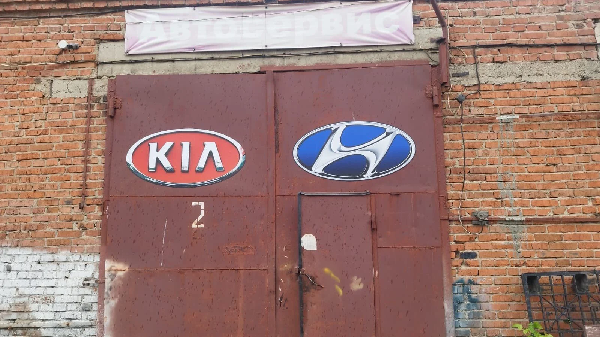
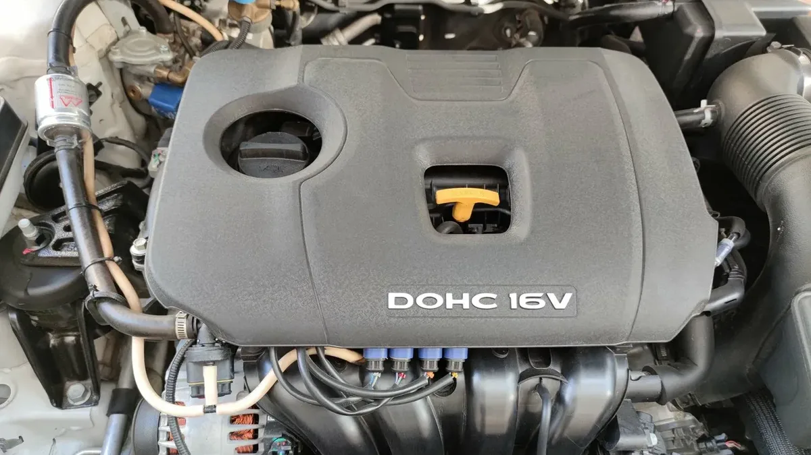
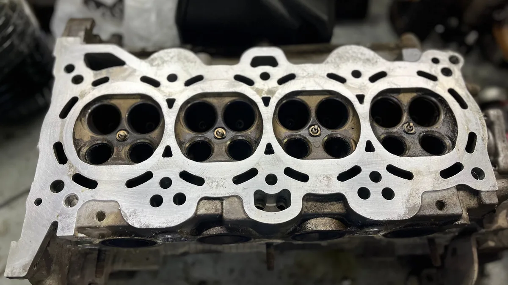
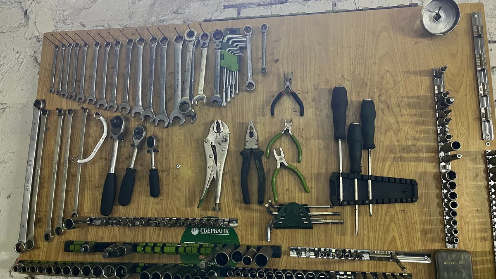

Автосервис Kia и Hyundai в Чебоксарах · Школьный проезд, 1А
Ремонт Kia и Hyundai в Чебоксарах: диагностика, ГРМ, двигатель
Автосервис «Корея Механика» на Школьном проезде, 1А: диагностика двигателя, замена ГРМ, ремонт генераторов, стартеров и рулевых реек, капитальный ремонт двигателей.
- 5,0 на Яндекс Картах, 63 отзыва
- Специализация: Kia и Hyundai
- Пн-Пт с 09:00 до 19:00

Услуги автосервиса «Корея Механика» в Чебоксарах
Входит
- Диагностика двигателя и автодиагностика
- Ремонт двигателей, в том числе капитальный
- Замена ГРМ, масла в двигателе и в КПП
- Ремонт генераторов, стартеров, рулевых реек
- Обслуживание Kia и Hyundai
Отдельно, если нужно
- Запись на время через форму на сайте, затем звонок для подтверждения
- Адрес: Чебоксары, Школьный проезд, 1А
- Оплата картой, есть парковка, можно купить подарочный сертификат
Цены на ремонт Kia и Hyundai в Чебоксарах
Стоимость типовых работ без запчастей. Точную сумму по вашему автомобилю мастер называет до начала работ.
Диагностика и обслуживание
- Диагностика двигателя1500 ₽
- Замена масла в двигателе1000 ₽
- Замена масла и фильтра в КПП1500 ₽
Ремонт
- Замена ГРМ Kia Hyundai3000 ₽
- Ремонт генератора и стартеров Kia Hyundai2000 ₽
- Мытье радиатора3000 ₽
- Ремонт рулевых реек5000 ₽
Цены ориентировочные, точную стоимость уточняйте по телефону перед визитом.
Как записаться на ремонт Kia или Hyundai в Чебоксарах
- 01
Выбрали услугу и время
Выберите услугу, день и час в форме - заявка сформируется, дальше позвоните по номеру +7 (927) 667-90-20. Марку, год и что беспокоит расскажете по телефону.
- 02
Подтвердили время
Время подтверждаем по звонку: +7 (927) 667-90-20.
- 03
Диагностика и согласование
Мастер осматривает автомобиль, объясняет причину неисправности и называет стоимость. Дальше - по вашему решению.
- 04
Выдача автомобиля
Осмотрите результат вместе с мастером до оплаты. Оплата картой.



Что пишут клиенты «Корея Механика»
Капитальный ремонт двигателя
«3 года назад делал капиталку гильзовкой у Станислава с тех пор проехал 800000 км. Все отлично, двигатель работает ровно на КИА Соренто» - Иван М., 8 января 2025.
Объясняют причину ошибки
«Вылез чек: ошибка Р0016. Обратился к Станиславу. Он доходчиво объяснил, с чем может быть связана эта ошибка» - андрей а., 16 июня.
Быстро
«Хочу отметить сделали быстро» - Андрей Е., 10 сентября.
Отзывы с Яндекс.Карт
«3 года назад делал капиталку гильзовкой у Станислава с тех пор проехал 800000 км. все отлично, масло не жрет, двигатель работает ровно на КИА Соренто»
Иван М. · 8 января 2025
«Являюсь владельцем kia sportage 2019 года. Вылез чек: "ошибка Р0016". Обратился к Станиславу. Он доходчиво объяснил, с чем может быть связана эта ошибка.»
андрей а. · 16 июня
«Хочу отметить сделали быстро и не дорого»
Андрей Е. · 10 сентября
Отзывы с карточки на Яндекс.Картах, без правок.
Частые вопросы
Какие автомобили обслуживаете?
Автосервис специализируется на Kia и Hyundai. Подойдёт ли ваш автомобиль, скажут по телефону +7 (927) 667-90-20.
Сколько стоит диагностика двигателя и замена ГРМ?
Диагностика двигателя - 1500 ₽, замена ГРМ Kia и Hyundai - 3000 ₽, замена масла в двигателе - 1000 ₽. Точную сумму по вашему автомобилю мастер называет до начала работ.
Делаете ли капитальный ремонт двигателей?
Да, ремонт двигателей входит в услуги. Что именно нужно вашему мотору, определяют после диагностики.
Какие ещё работы делаете?
Замена масла в двигателе и КПП, ремонт генераторов и стартеров, ремонт рулевых реек, мойка радиатора.
Нужно ли записываться заранее?
Лучше записаться: выберите услугу, день и время в форме на сайте, затем позвоните по номеру +7 (927) 667-90-20 для подтверждения.
Когда вы работаете и где находитесь?
Понедельник-пятница с 09:00 до 19:00, суббота и воскресенье - выходной. Адрес: Чебоксары, Школьный проезд, 1А. Оплата картой, есть парковка.
Запишитесь на диагностику или ремонт Kia и Hyundai
- Адрес
- Школьный проезд, 1А, Чебоксары
- Часы
- Пн-Пт 09:00-19:00, Сб и Вс - выходной
- Телефон
- +7 (927) 667-90-20